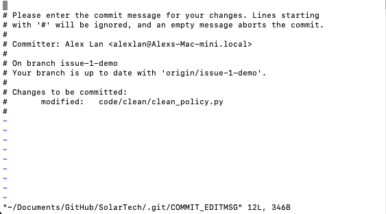

Mini-Lesson 1: Command Line, Quarto, Vim and GitHub
Vim: How Vim shows up in GH
- In this class you should mostly see vim when you forget to add a commit message
- e.g.
git commitwith changes staged for commit,git mergewhen there’re divergent histories.
- e.g.
- If you don’t provide
-m, Git automatically opens a text editor Vim.- The best practice is to do
git commit -mevery time!
- The best practice is to do
- In the following example, I have changes staged for commit, but I run
git commitwithout supplying a message.

